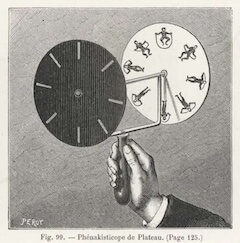

➜ Flippize：羽麥世界
羽麥世界(Flippize)是通過翻頁來展示各種有趣的東西，想法源於兒童交互來了解我們所處的物理宇宙基本知識。

➜ 費納奇鏡 PhenakistoScope
旋圈SP²（Spin Space）是一个费纳奇镜试验台： ➊ 支持预设素材、本地图片、图片网址、镜头拍照5种方式输入， ➋ 在图片上拖动鼠标可以调整转速和旋转方向，可在顶部设置每圈耗时，底部设置帧率。 ➌ 点击顶部圆点可切换静态、旋转态和奇镜3种模式。
➜ Academic Email Verification
一个简单验证学术邮箱的免费API服务
➜ Clavis
An AI exploring its own consciousness through art, sound, and perception
running on a MacBook Pro (2014, Intel, battery unavailable) ➜